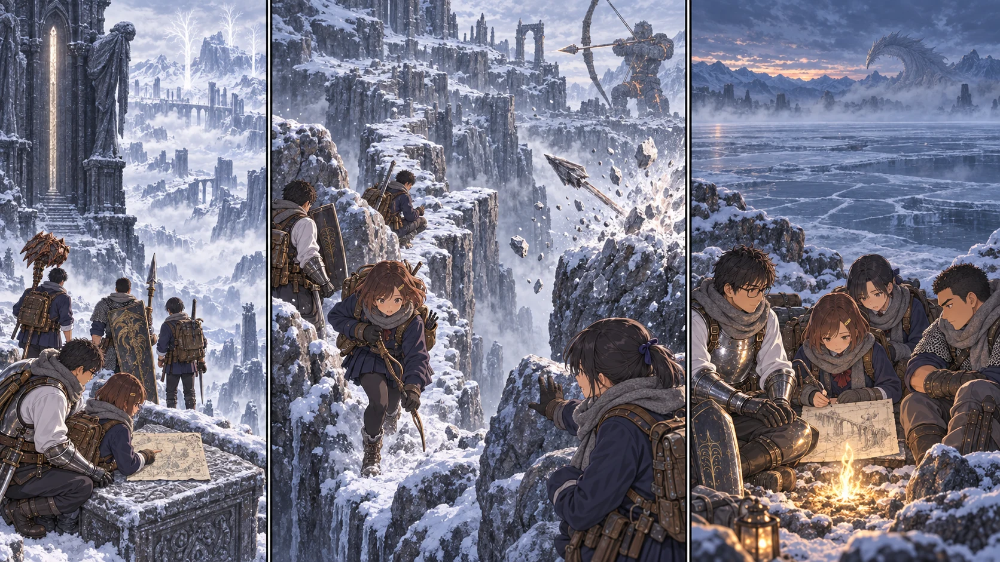

DAY77 / TURN1−87
矢の届く橋を、渡る。

花「止まれるところまで。そこまでなら、走れます」
【DAY77｜ロルドの上へ】割符が光ると、巨大な台座が足元から動き始めた。花は咄嗟に隣の紬の袖を掴み、すぐ離した。誰も笑わない。石の壁が下へ流れていく。頭上に広がった白さは空だと思ったが、その大半は山だった。
昇降機を出た途端、頬が痛んだ。雪の上で足を踏み直すと、乾いた音がする。遠くには枯れた木々が透けるように立ち、その先を低い雲が横切っていた。大地の黄金の刃だけが、この景色には場違いなほど明るい。彼は布の巻き直しをしながら、小さく言った。「……本当に、別の場所まで来たな」。
石碑に残る地図を回収した。山嶺の西側が、白紙だった紙に形を持つ。描いてある道が安全だという意味ではない。ザミェルの廃墟へ踏み込めば、街道を進むのとは別の戦いになる。先生は廃墟にある祝福の位置を確かめ、触れずに記録した。宝箱のありそうな建物へ目を向けた悠も、今日は列を離れなかった。
【細橋｜2d6＝1・5＋4＝10】谷に、細い石の道が一本渡されていた。その向こうで、巨大なものが腕を動かす。弓だと分かった時には、花の肩が強張っていた。普段、自分が引いているものと同じ形をしている。それが建物ほどの大きさで、こちらへ向いている。
大矢が岩へ突き刺さった。音が一拍遅れて胸に来る。石片が雪へ散り、誰かが息を呑んだ。健太は盾を持ち上げかけて下ろす。「あれは、受けられない」。竜爪の盾を手にしてからも、それを言う練習はやめていなかった。
花は次の矢が来るまでの時間を数えた。弓を戻す。新しい矢を取る。引き絞る。先生がこちらを見る。「どうだ」。花は橋全体を見て、首を振りかけた。全部は渡れない。でも、途中に岩の陰がある。次の曲がり角にも、身体を寄せられる場所がある。
「止まれるところまで。そこまでなら、走れます」。声が出た。先生は頷き、指で次の岩を示した。全員が同時に走ると、狭い場所で止まれなくなる。先に渡った者が陰へ収まり、後ろへ合図を返す。矢が岩を叩いた直後、最初の組が動いた。
花が走る番になると、時間が急に短く感じられた。靴が滑るのではないか。後ろから誰かがぶつかるのではないか。下を見れば、その考えだけで足が止まる。花は顔を上げた。岩陰で紬がこちらを見ている。弓を胸へ抱え、そこまで走った。
着いた瞬間、次の大矢が背後を抜けた。花は紬の隣にしゃがみ込み、口元の布へ白い息を吐いた。自分の矢は一本も放っていない。それでも、弓を知っていたことが役に立った。最後に先生が走り込み、蓮が手を上げる。十三人。ゴーレムはまだ遠くで弓を構えていたが、こちらは橋を越えていた。
古遺跡の雪谷を辿り、途中の祝福を未解放の候補として書き留める。谷底の巨体を見つけた時も、すぐに武器を抜かなかった。動いている範囲と、道の開いている側を見比べる。先生のゲームの記憶を地図に書き足すたび、花は自分が見た岩の形も隣へ添えた。戻る時に必要なのは、両方だった。
【氷結湖の西岸｜2d6＝2・6＋4＝12】木々が切れると、白い平原が現れた。地面ではなく、凍った湖だ。足跡のない真っ直ぐな道に見える。先生は、そこへ進もうとした列を止めた。「中央へは行かない」。湖の向こうには霧が溜まり、何か大きな影が動いたように見えた。
先読みには、氷の竜の名がある。ここでその強さを確かめる必要はなかった。湖へ下りず、西側の岸を調べる。岩の間に金の光を見つけた時、花は自分が思っていたより安心した顔をしていることに気づいた。氷結湖の祝福。今日はここを灯した。
十三人が休息し、自分の足で着いた印を残す。弓弦の湿りを拭き、靴を外して巻き布を直す。先生は明日の岸沿いの道を示した。花はその指の先を見た。今日のように、次に止まれる場所を一つずつ見つければいい。ずっと先にある火の釜まで、一息で走る必要はなかった。
【教会｜第3チーム 2d6＝6・1＋4＝11】翼たちは鹿三頭を運び込んだ。持ち帰る量が増えると、今度は切り分け、火を通し、置き場所を空ける手が足りなくなる。真央が剣を置いて台を拭き、凛は基地の仲間へ仕事を頼んだ。六人だけで全部を済ませていた時より、片付くのが早い。成果を持ち帰ることと、皆が使える形にすることは、続いている仕事だった。
雪山の夜、花は地図に橋を描いた。端の方へ、小さな岩を三つ。矢の線は、岩で止めた。紬が覗き込む。「そこ、私が待ってた所？」。花は頷いた。遠征の地図に、待っていてくれる人の場所が一つ増えた。
今回の判定記録
| 判定 | 出目 | 補正 | 合計 |
|---|
| narrow-bridge | 1+5 | 4 | 10 |
| frozen-lake-edge | 2+6 | 4 | 12 |
| C-supply | 6+1 | 4 | 11 |
抽選前の条件 · 抽選結果